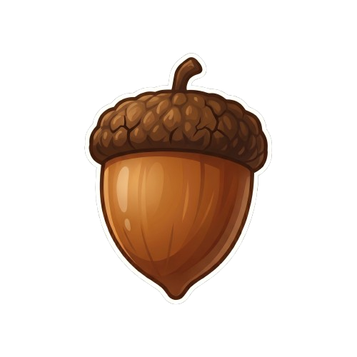

Entre ou crie sua conta gratuita
Digite sua senha para entrar
Enviamos um codigo de verificacao para
Crie sua conta:
Bem-vindo! Como quer ser chamado?
O SquuiLui te guia numa jornada de aprendizagem personalizada, com revisão inteligente e progresso visível.
Do zero ao especialista, no seu ritmo.

Um mapa claro do que aprender e em qual ordem, organizado em blocos progressivos. Sem perder tempo com conteudo irrelevante.
Sistema de repeticao espacada que te lembra do conteudo no momento certo — para fixar de verdade, sem decorar a forca.
Pratique falar com reconhecimento de voz. Veja seu percentual de acerto e evolua sua pronuncia com feedback imediato.
Estatisticas claras mostram sua evolucao. Cada sessao conta — e voce vai sentir cada passo dado na jornada.
Do A1 ao B2. Vocabulario, frases, gramatica e cultura para quem quer se comunicar de verdade na Italia.
Foco em fluencia pratica. Vocabulario de alta frequencia e estruturas essenciais para comunicacao cotidiana e profissional.
Mais idiomas e trilhas especializadas chegando em breve. Cadastre-se para ser o primeiro a saber.